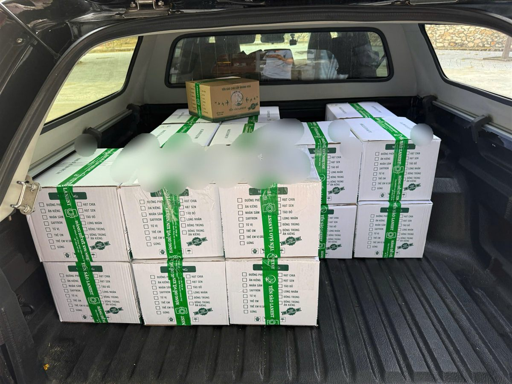

Nguyên Tắc Hợp Tác Đại Lý Yến Sào Lanest: Cam Kết Hai Chiều Để Đi Đường Dài
Yến Sào Lanest · Đăng ngày 02/11/2026

Hợp tác đại lý yến sào không khó ở lần nhập hàng đầu tiên, mà khó ở chỗ giữ được nhau qua nhiều mùa bán. Bài này nói rõ Lanest cam kết gì với đại lý ở bốn việc: chất lượng, giao hàng, hỗ trợ bán, đổi trả, và đại lý cần giữ những gì để cùng đi đường dài.
Thùng yến chưng Lanest xếp lên xe, chuẩn bị giao cho đại lý
1. Vì sao Lanest nói rõ nguyên tắc ngay từ đầu
Ở Khánh Hòa, nhiều nhãn yến đã ngưng hoạt động, và người chịu thiệt trước tiên là đại lý bên dưới. Người sáng lập Lanest chọn một hướng khác hẳn chuyện đua giá:
"Chị đi con đường lâu dài á nên thời điểm này rất nhiều công ty bị dẹp đi nhưng chị vẫn trụ lại chị xây dựng phòng ban cho chị."
Bài học người sáng lập Lanest nhận từ ba mẹ và người thầy là "giữ uy tín hơn giữ mạng". Những cam kết dưới đây là cách câu đó thành việc cụ thể với đại lý.
2. Cam kết về chất lượng: hàng hôm nay giống hàng tháng trước
Điều đại lý sợ nhất là lô sau không bằng lô trước. Lanest giữ chất lượng bằng những việc kiểm được:
- Đội thợ riêng và 4 chốt kiểm với yến tinh chế: thợ nhặt, thợ đảo lại, thợ đắp, rồi nhân viên kiểm tra cuối trước khi đóng hộp.
- Ba điều không làm: không tẩy trắng, không độn tăng trọng lượng, không "chữa" hàng không đạt.
- Kiểm nghiệm đều đặn, không chỉ một lần lúc làm hồ sơ. Theo lời người sáng lập Lanest: "Nhiều bên đóng cửa nhưng bên chị vẫn duy trì được vì hàng tháng đều tự gửi mẫu đi kiểm nghiệm thật."
- Giấy tờ đầy đủ: chứng nhận ISO 22000:2018, bản tự công bố sản phẩm kèm phiếu kiểm nghiệm, mã vạch, hóa đơn cho từng đơn hàng.
Xem thêm: bên trong xưởng yến Lanest, chứng nhận ISO 22000 của Lanest.
3. Cam kết về giao hàng: đúng hàng, đúng hẹn, được kiểm trước khi nhận
Lanest giao toàn quốc theo chính sách vận chuyển đang công bố:
| Khu vực | Thời gian giao dự kiến |
| Cam Ranh, Nha Trang và một số tỉnh có đại lý | Trong ngày, tùy thời điểm đặt hàng |
| Ngoại thành, tỉnh khác | 2–5 ngày làm việc |
| Tuyến có chành xe | Gửi chành xe, nhân viên chốt đơn tra tuyến giúp |
Hàng đi qua các đơn vị vận chuyển như Giao Hàng Nhanh, Viettel Post. Yến hũ từ 3 thùng trở lên, yến tinh chế từ 200g trở lên được miễn phí giao hàng. Khi nhận, đại lý được kiểm hũ, hộp, tem niêm phong, số lượng, hạn sử dụng; hàng móp vỡ, thiếu, sai loại thì có quyền từ chối nhận.
4. Cam kết hỗ trợ bán: giữ giá, giữ khách, giữ chỗ đứng cho đại lý
Ba điều Lanest giữ để đại lý bán được lâu:
- Giá thống nhất cho cả hệ thống. Mọi cộng tác viên, đại lý, nhà phân phối bán đúng giá niêm yết. Đại lý không phải đua giá với chính người cùng hệ thống.
- Không đụng tới khách của đại lý. Có lúc Lanest giao thẳng tới đại lý cấp dưới của một nhà phân phối, tức là biết danh sách khách của họ. Người sáng lập Lanest nói: "mình làm việc rất là uy tín mình không bao giờ đụng tới data khách hàng của đại lý ở bên dưới".
- Chủ thương hiệu không ra mặt bán lẻ cạnh tranh. Theo người sáng lập Lanest: "Mình chỉ là người xây dựng thương hiệu thôi còn bán hàng để các bạn khác bán."
Đi kèm là nội dung truyền thông để đăng bán, đào tạo tư vấn sản phẩm, chăm sóc sau bán, và bộ giấy tờ gửi được cho đại lý khi khách hỏi nguồn gốc.
Đội thợ riêng của Lanest nhặt lông từng tổ yến, mặc đồ bảo hộ, đeo găng tay
5. Cam kết đổi trả: lỗi của mình thì mình chịu
Chính sách bảo hành, đổi trả của Lanest áp dụng cho yến hũ chưng sẵn và yến tinh chế, kể cả hàng mua tại các đại lý phân phối ủy quyền:
- Thời hạn: 15 ngày kể từ ngày nhận hàng, và không quá hạn sử dụng trên sản phẩm.
- Được đổi, trả: hàng vỡ, hư hỏng, biến chất do vận chuyển hoặc do nhà sản xuất; giao sai loại, sai khối lượng; hũ rò rỉ, không kín; tổ yến ẩm, mốc, có dị vật.
- Cần có: hóa đơn mua hàng và hình ảnh, video quay lúc mở hàng.
- Xử lý: Lanest phản hồi trong 1–2 ngày làm việc, đổi sản phẩm tương đương hoặc hoàn tiền theo thỏa thuận; phí vận chuyển phát sinh do lỗi công ty được miễn 100%.
Người sáng lập Lanest kể có những lần hàng của khách hư do bảo quản khi đã qua mốc 15 ngày, chị vẫn linh hoạt hỗ trợ đền bù. Đó là xử lý theo từng trường hợp, không thay cho chính sách. Quy trình chi tiết: mua yến tại Lanest: đặt hàng, giao hàng, đổi trả.
6. Đại lý cần gì để đi đường dài cùng Lanest
Cam kết chỉ bền khi đi hai chiều. Đây là những điều Lanest mong ở đại lý, áp dụng chung cho cả hệ thống, không phụ thuộc quan hệ cá nhân:
- Bán đúng giá niêm yết. Không phá giá công khai, không giảm giá qua tin nhắn riêng, không tự gộp combo dưới giá.
- Cạnh tranh bằng tư vấn, không bằng giá. Hiểu sản phẩm, nói đúng thành phần từng dòng, không nói quá công dụng.
- Kiểm hàng khi nhận, quay video lúc mở hàng, giữ hóa đơn. Đây là căn cứ để đổi trả nhanh khi có sự cố.
- Bảo quản đúng cách. Tránh ẩm, nhiệt cao, nắng trực tiếp; hàng hư do bảo quản sai không thuộc diện bảo hành. Xem thêm cách bảo quản tổ yến.
- Chuẩn bị hàng sớm cho mùa cuối năm. Từ tháng 8 đến cuối năm là mùa bán chạy của nghề yến, đặt sớm để không thiếu hàng đúng lúc khách cần.
Điều kiện bắt đầu có trong bài làm đại lý yến sào Lanest; cách chọn nguồn hàng ở bài kinh nghiệm nhập sỉ yến sào.
Câu hỏi thường gặp
Khách mua yến tại đại lý có được đổi trả như mua trực tiếp ở Lanest không?
Có. Chính sách đổi trả 15 ngày áp dụng cả với hàng mua tại đại lý phân phối ủy quyền, khi có hóa đơn và video mở hàng.
Lanest có bán lẻ cạnh tranh với đại lý không?
Người sáng lập Lanest không ra mặt bán lẻ để giữ lòng tin của đại lý, và Lanest không dùng danh sách khách của đại lý để bán trực tiếp.
Hợp tác đại lý yến sào với Lanest thì liên hệ ở đâu?
Anh chị gọi hotline 0258 6278 627, nhắn fanpage Yến Sào Lanest hoặc email Yensaolanest79@gmail.com. Chính sách giá, chiết khấu theo hạng được gửi riêng cho từng đại lý.